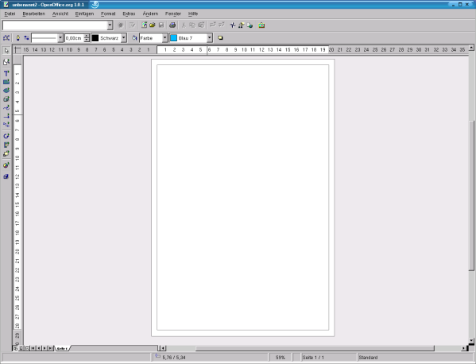

| [zurück] | [Hauptmenü] | [weiter] |
| [PDF] | ||
Allgemeine Einführung

Abbildung
1: OpenOffice.org1.0.1-Draw Fenster
Wenn Sie OpenOffice.org Draw, das
Zeichenprogramm des OpenOffice.org-Projektes öffnen, sehen Sie
zu erst ein leeres Zeichendokument. Zeichnen können Sie erst,
wenn Sie ein bestimmtes Zeichenwerkzeug aktivieren.
Als erstes fallen die für OpenOffice.org typischen Symbolleisten auf:
Die Funktionsleiste mit grundsätzlichen Funktionen aus dem Menü „Datei“ und „Bearbeiten“>, die Funktionen des Navigators, Stylisten, der Hyperlinkschaltfläche und der Schaltfläche für die Gallery.
Die Objektleiste enthält Funktionen, um die Eigenschaften von Zeichenobjekten (Linienstärke, Punkte bearbeiten, Linienfarbe, ...) zu bearbeiten.
Die Werkzeugleiste enthält alle nötigen Werkzeuge die zum Zeichnen benötigt werden. (Rechteck, Text, Kreis, Linien, Verbinder, ...)
Optional können noch hinzugefügt werden:
Die Farbleiste und die Optionsleiste mit zusätzlichen Funktionen, die bei bestimmten Aufgaben notwendig sind.
Die Hyperlinkleiste zum Setzen und Bearbeiten von Hyperlinks wird in Zeichnungen eher selten benötigt.